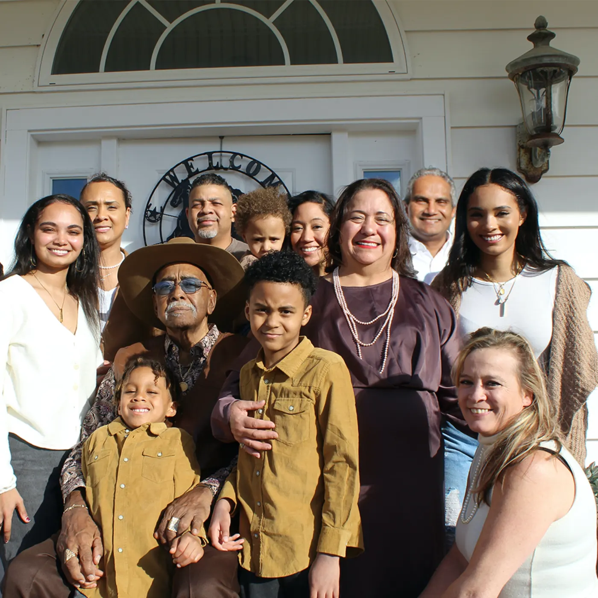

Audiology Services in Nashville, TN
Comprehensive, evidence-based hearing care — with transparent, unbundled pricing.
Hearing care personalized for you
For the best hearing available to you, there is no one-size-fits-all solution. That's why at Nashville's Hearing & Communication Center, we do thorough testing during your initial appointment so we can fit you with the best hearing amplification device that suits your hearing needs, lifestyle, and budget. As one of our patients, you have access to…
Comprehensive diagnostic testing
Communication needs assessment
Device verification and orientation appointments
Minimum 30-day trial period for devices purchased from us
Remote care appointments via telehealth
Concierge services for in-home assessments, device setup, and troubleshooting
Return appointments to reassess goals and devices
New Patient Nights to meet fellow patients and learn good communication strategies
CareCredit to make hearing enhancement accessible to all budgets
Insurance coverage for qualifying policies
Diagnostic hearing testing
Comprehensive hearing evaluations — pure-tone audiometry, speech-in-noise testing, tympanometry, and a full communication needs assessment. Every evaluation includes real-ear measurement capability so we have an accurate picture of how your hearing system is working.
Learn about hearing testingHearing aid fittings & consultations
Unbundled pricing means you see every line item. We fit devices from every major manufacturer — Sonova (Phonak), Starkey, WS Audiology (Signia/Widex), GN (ReSound), and Demant (Oticon) — and we don't mark up device costs. Expect a minimum 30-day trial period, device orientation, and a follow-up plan.

Follow-up care, calibration & real-ear measurement
Hearing aid verification with real-ear measurements makes sure your device is tailored to the shape and acoustics of your ear. Return appointments reassess goals, adjust settings, and troubleshoot. Telehealth remote care is available for supported devices.
Specialty services
Care that goes beyond traditional hearing aids.
For single-sided deafness and conductive hearing loss. Full programming, service, and follow-up.
TV streamers, captioned phones, FM/loop systems, and personal amplifiers for the situations that challenge you most.
Bring in any brand. We'll clean, check, recalibrate, and support hearing aids purchased elsewhere.
Manufacturers we work with
Independent. Unbiased. We fit every major platform so your hearing profile and lifestyle — not a sales quota — drive the recommendation.
Phonak, Unitron, Advanced Bionics
Starkey, Audibel, NuEar, MicroTech
Signia, Widex
ReSound, Beltone, Jabra
Oticon, Oticon Medical, Bernafon, Sonic Innovations
You don't have to put up with hearing loss anymore
Call 615.237.7701 to schedule a hearing evaluation with Dr. Gina Angley.